Restaurant · le modèle repensé : ce qui était étrange, et ce que je propose
26/11/2026 · le plan du client n'est plus suivi là où il n'avait pas de sens pour un restaurant de deux étages
J'ai repris les deux endroits que tu as entourés, puis passé tout le bâtiment en revue,
de la rue et de l'intérieur. Voici chaque endroit repris, avant et après.
L'angle sud-est du 1er (ta 1re capture)
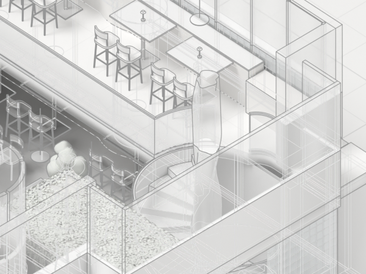
Avant
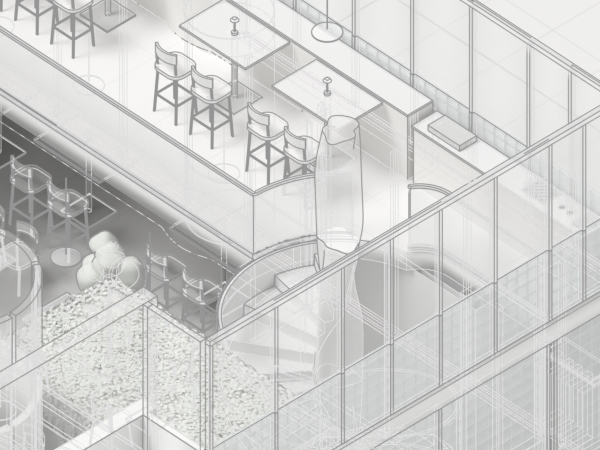
Après, sur la carte
Ce qui n'allait pas. Une console, un bout de mur isolé, deux morceaux de garde-corps et, derrière, une poche fermée au-dessus d'une pièce du bas : le plan laissait ce coin sans usage.
Ce que je propose. Le plancher va jusqu'aux deux façades : le coin fait partie de la salle, derrière des pavés de verre sur deux côtés. Le garde-corps du jardin de pierres continue d'un seul tenant jusqu'à la façade. Dans le coin, je propose une station de service (A) le long des pavés de verre, ou une table pour deux (B).
L'angle sud-est du bâtiment (ta 2e capture)
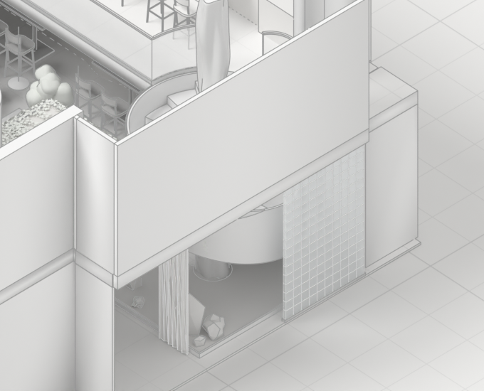
Avant
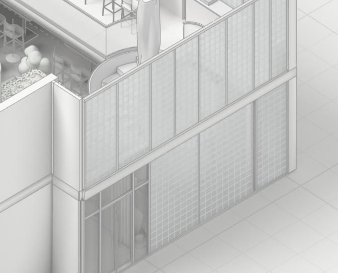
Après
Ce qui n'allait pas. Une boîte vide collée à la façade droite, ouverte sur le côté, et une fente ouverte entre elle et l'entrée : l'angle du bâtiment ne se refermait pas, et le 1er s'arrêtait en retrait au-dessus.
Ce que je propose. La boîte est retirée. À sa place, le vestiaire de l'entrée, derrière les mêmes pavés de verre. Un pilier d'angle ferme le bâtiment sur les deux étages, et le 1er va jusqu'à l'angle.
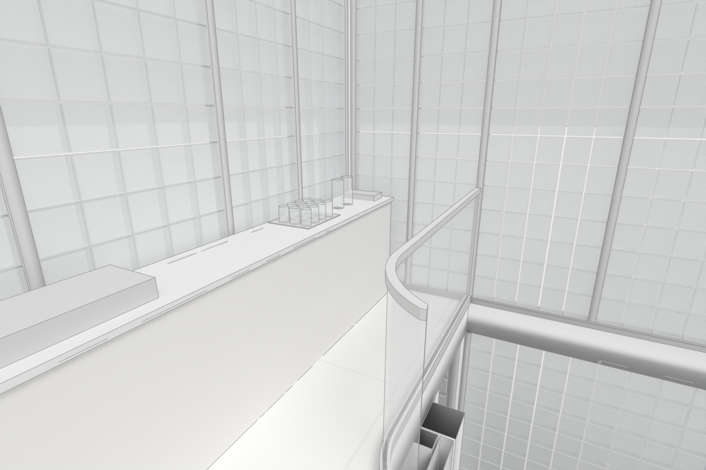
A · la station de service, à l'arrivée de l'escalier
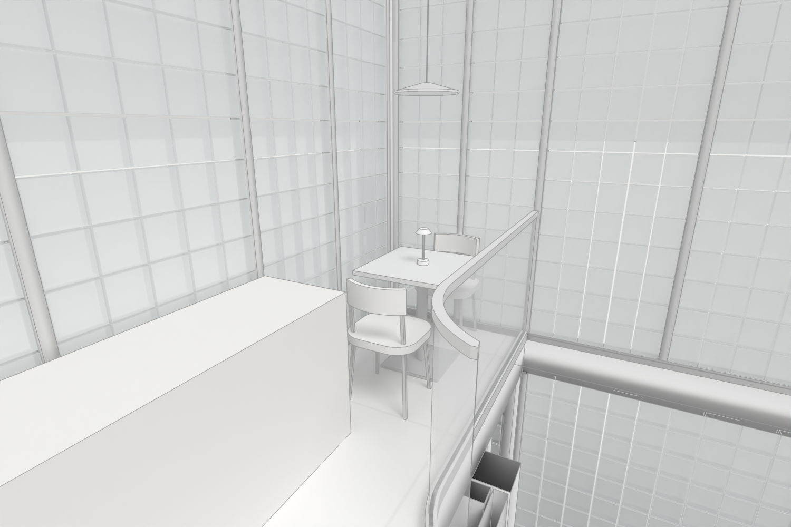
B · une table pour deux dans le coin
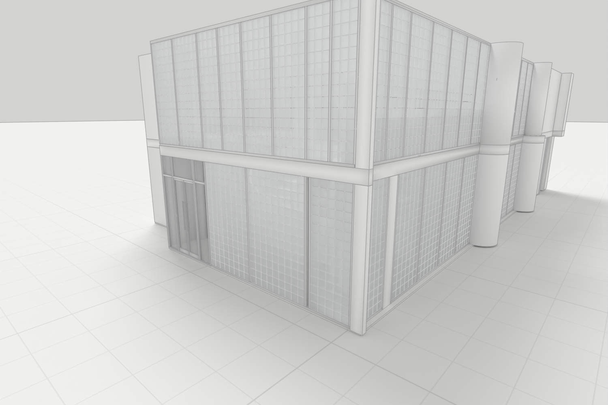
L'angle sud-est, de la rue
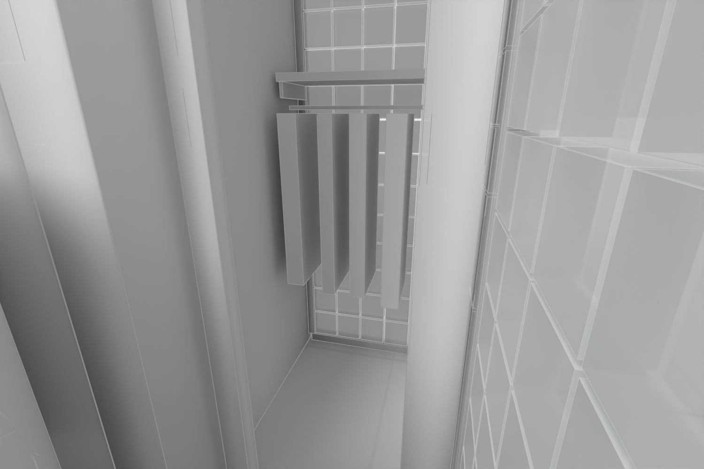
Le vestiaire, depuis le pied de l'escalier
Les autres endroits repris
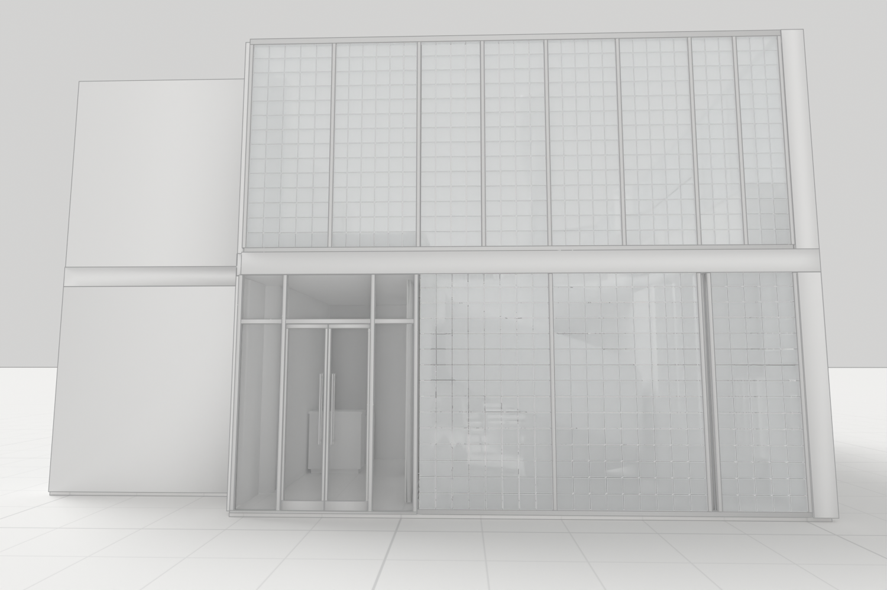
Après : la rue, la devanture, les pavés de verre sur deux étages

Avant : l'entrée ouverte, le mur aveugle au-dessus
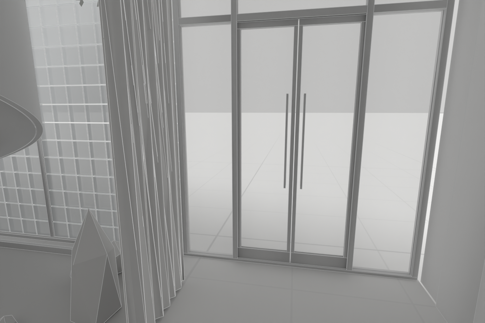
La double porte, depuis l'accueil
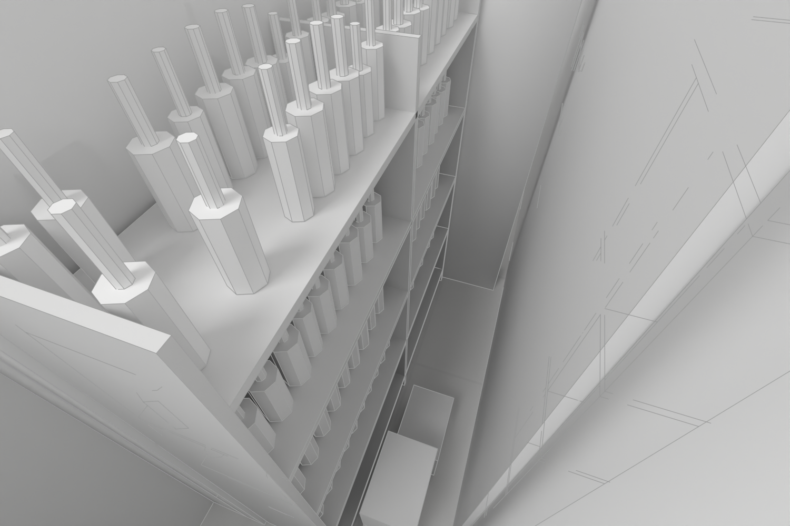
La réserve du bar omakase, à la place de l'escalier
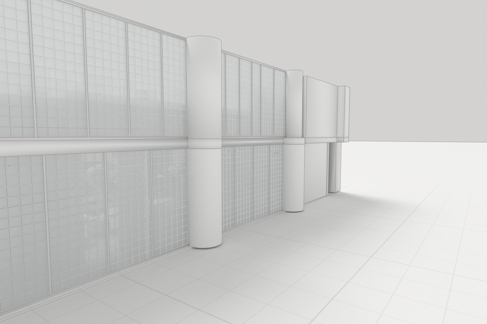
Après : la façade droite, les pavés de verre entre les poteaux

Avant : la même façade, aveugle
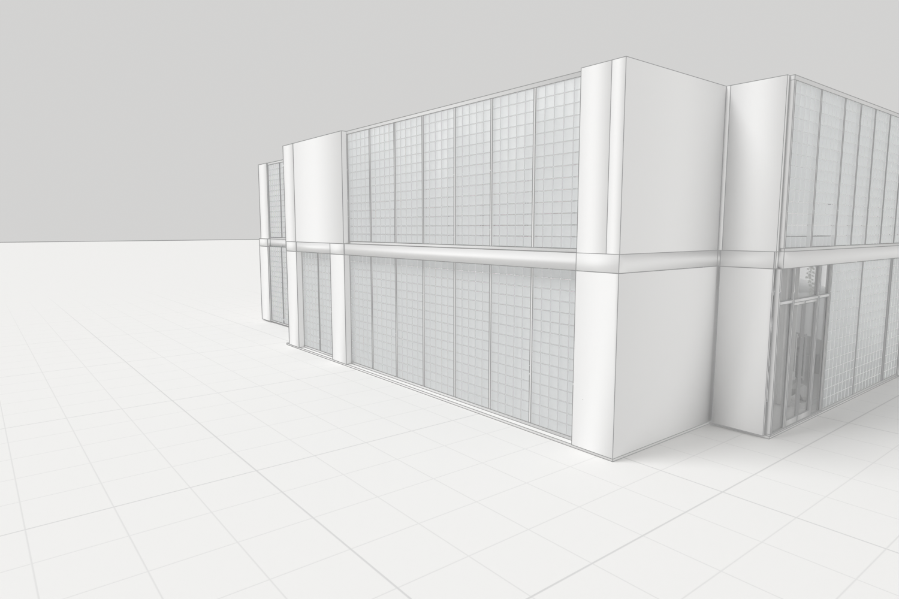
Après : la façade gauche, les pavés de verre sur deux niveaux
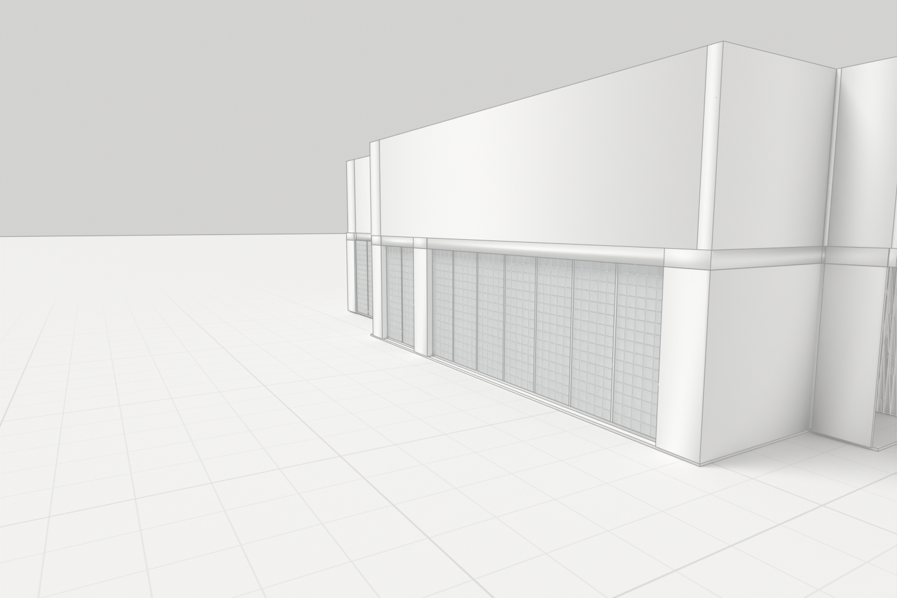
Avant : le mur plein du 1er
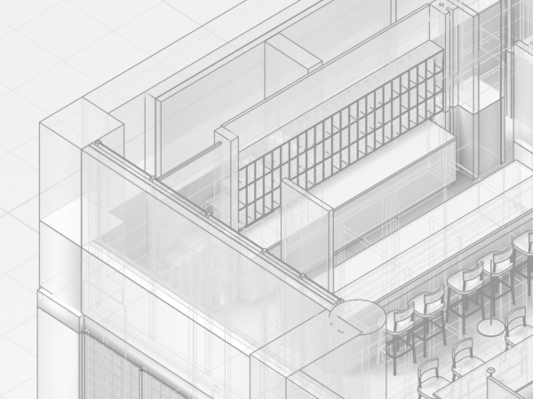
Avant : l'escalier vers nulle part, derrière le bar
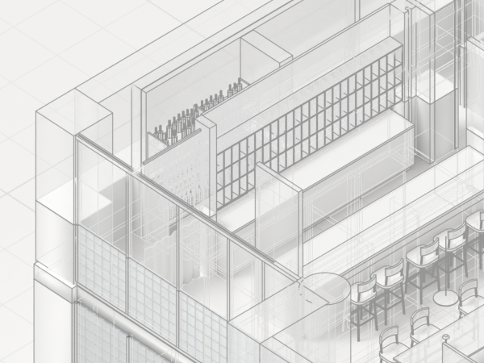
Après : la réserve
- L'entrée. Le plan laissait la devanture ouverte : la rue entrait dans l'accueil sans porte ni vitrage. Elle a maintenant une devanture en acier : deux vitres fixes, une double porte vitrée avec de longues poignées, une imposte. Les pavés de verre continuent devant le jardin de pierres et le vestiaire. Au-dessus, le mur aveugle du 1er devient des pavés de verre : la double hauteur de l'escalier et le lierre prennent le jour.
- Les façades aveugles. À droite, sur les deux étages, une bande pleine passait devant les pavés de verre : vue de la rue, la façade était un mur. Elle est retirée, les pavés se voient entre les poteaux. À gauche, le 1er avait un mur plein doublé d'une vitre : au-dessus du vide, c'est maintenant une façade de pavés de verre sur deux niveaux, alignée sur celle du bas. Au coin nord-ouest, trois couches de murs n'en font plus qu'une.
- L'escalier qui menait nulle part. Derrière le bar omakase, sept marches montaient vers un étage que le restaurant n'a pas. Elles sont retirées : c'est la réserve du bar, des étagères en acier avec les bouteilles de saké et de vin, quelques caisses. Le rideau qui la ferme est gardé.
- Un trou dans la façade droite du 1er. Entre deux panneaux de pavés de verre, un vide de 60 cm que la bande pleine cachait : refermé.